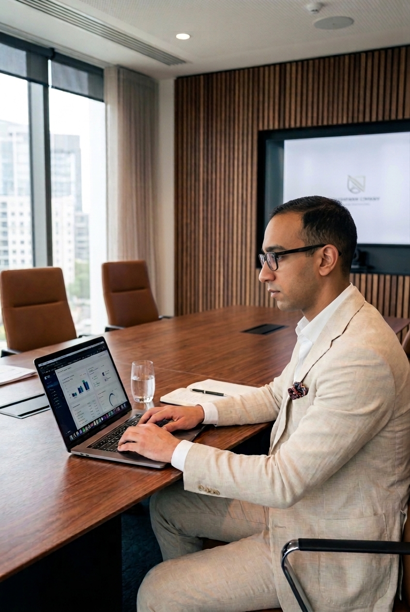
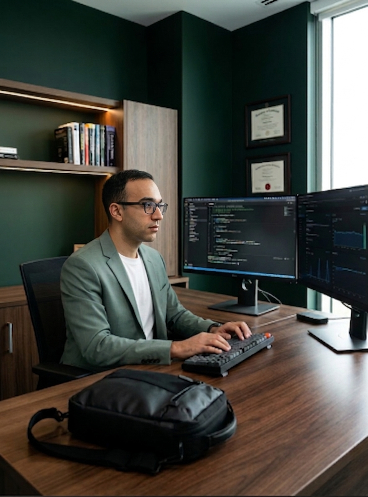

Étudiant en infrastructures digitales et intelligence artificielle, entre réseaux, données et automatisation.
Un profil technique qui relie l'infrastructure réseau à l'automatisation intelligente.
Actuellement en formation en intelligence artificielle à l'IDS Incubateur Digitale Solidaire, après un parcours en infrastructures digitales et en réseaux informatiques. J'aime comprendre comment un système tient debout — du câblage et des VLAN jusqu'aux tableaux de bord qui pilotent une décision.
Sur le terrain, j'ai audité des parcs informatiques, sécurisé des réseaux Wi-Fi et déployé Active Directory ; côté data, j'automatise des flux de reporting avec n8n et Power BI. Aujourd'hui, je cherche à combiner ces deux mondes : une infrastructure solide, et une couche d'automatisation intelligente au-dessus.

Quatre domaines complémentaires, du matériel jusqu'à l'automatisation des données.
Quatre stages, du support terrain à la data et à l'automatisation.
Des projets menés en formation et en stage, de la donnée à l'infrastructure.
Analyse et visualisation des données de vente avec automatisation des flux de reporting via n8n.
Analyse et visualisation des données de vente pour le pilotage de la performance commerciale.
Mise à niveau du parc informatique et mise en place d'un intranet d'entreprise.
Scan des failles de sécurité d'une API Web à l'aide de techniques de cybersécurité et d'OWASP.
Configuration et déploiement des services sous Windows Server 2019.
Un socle académique réseaux/infra, complété par des certifications Cisco.
Étudiant en fin de formation, disponible pour un stage ou une alternance en infrastructure, data ou automatisation intelligente.
